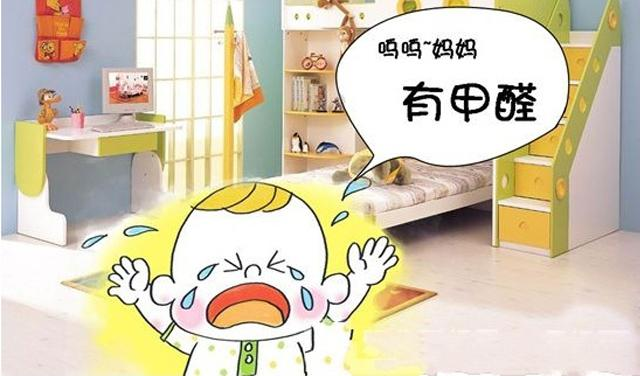
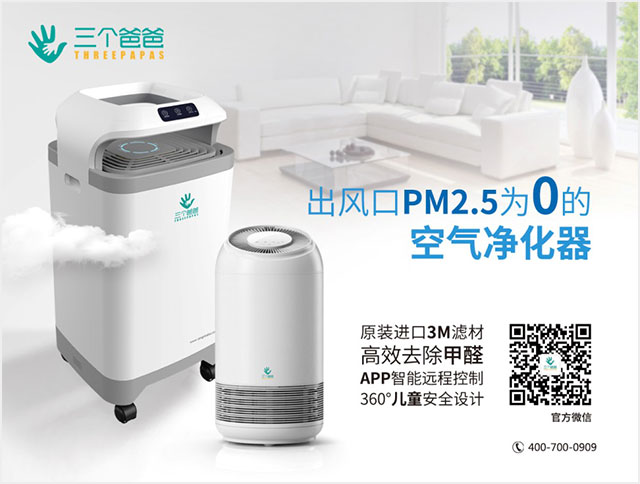

目前我国城乡居民家庭中的甲醛主要来自4个方面：
1、室内装饰的胶合板、细木工板、中密度纤维板和刨花板等人造板材。因为甲醛具有较强的黏合性，还具有加强板材的硬度及防虫、防腐的功能，所以目前生产人造板使用的胶粘剂是以甲醛为主要成分的脲醛树脂；
2、人造板制造的家具。某市消费者协会进行过的一项比较试验结果显示：在抽取的60套中密度家具样板中，有29套甲醛超过国家有关标准，超标率高达48.23%；
3、含有甲醛成分的其他各类装饰材料，如白乳胶、泡沫塑料、油漆和涂料等。 专家特别提醒，乳胶胶粘剂在装饰装修中广泛用于木器工程和墙面处理方面，特别是封闭在墙面的乳胶中的甲醛很难清除；
4、室内装饰纺织品，包括床上用品、墙布、墙纸、化纤地毯、窗帘和布艺家具。在纺织生产中，为了增加抗皱性能、防水性能、防火性能，常加入一些含甲醛助剂。
点击二维码关注三个爸爸公众号